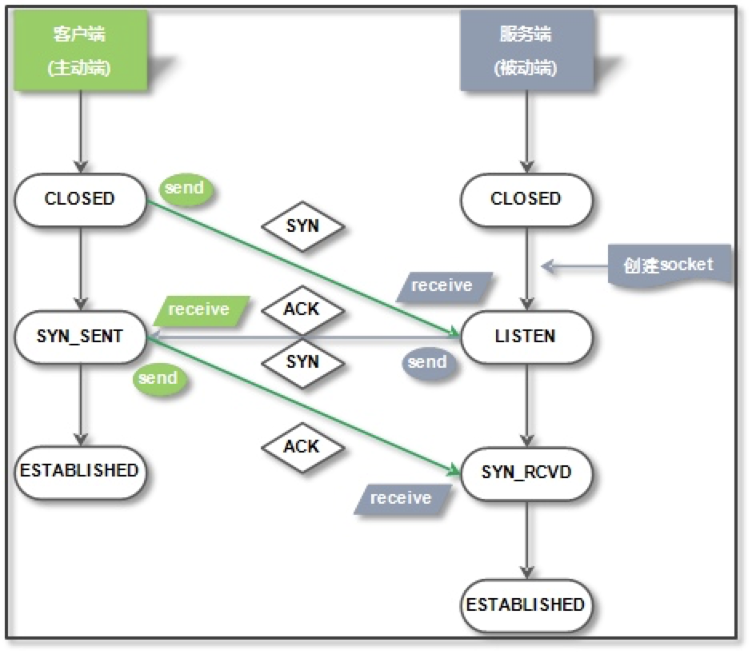
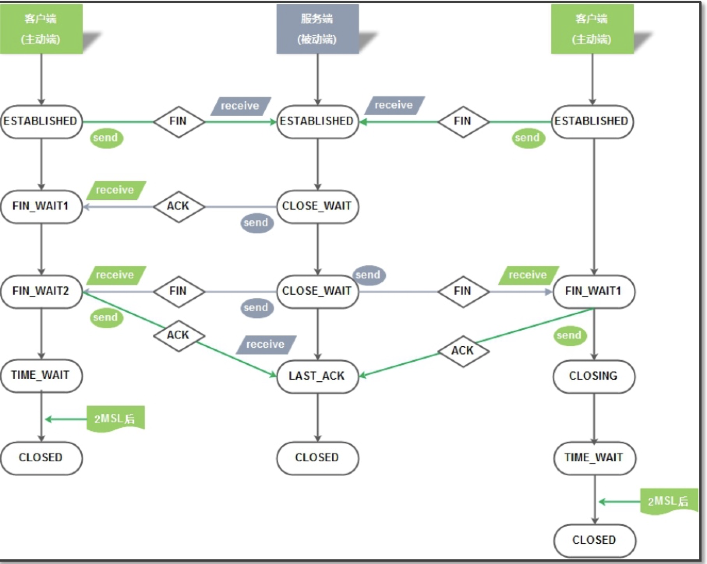

概述
TCP的连接过程与状态管理只要了解过网络的伙伴应该都听说过，tcp的连接与断开过程主要就是三次握手与四次分手，整个过程可以通过抓包 观察，网上的资料也比较多，今天重点来梳理一下，整个过程中相关的进程状态的变化，主要是方便以后工作中对网络故障的排查。
连接建立与结束
三次握手示例
用户：向服务器发出建立连接的请求（SYN请求） ，随机序列号seq=100
服务端： 我收到你的请求，同意，并且我也要与你创建连接 （ACK,SYN请求），随机序列号seq=300 ,ack=101
用户：我收到了你确认，我也愿意，准备开始传输数据（ACK请求）， seq=101, ack=301
四次挥手示例
用户: 发出断开连接的请求(FIN,ACK) seq=41 ack=3
服务端: 收到断开请求,同意(ACK) seq=3 ack=42
服务端: 发出断开连接的请求(FIN,ACK) seq=3 ack=42
- 用户: 确认断开(ACK) seq=42 ack=4
TCP连接状态

1 | TCP三次握手状态转换简单说明： |
TCP挥手状态

1 | 01.客户端先向服务器发送FIN报文，请求断开连接，其状态变为FIN_WAIT1。 |

...
...
00:00
00:00
This is copyright.